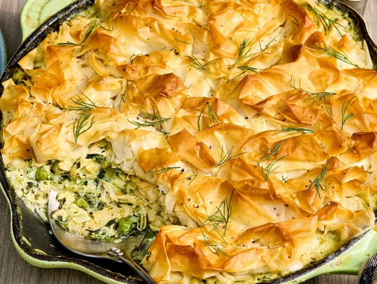

Skillet Spanakopita Chicken Pot Pie
Pie

Description
This skillet spanakopita chicken pot pie brings together the creamy comfort of chicken pot
pie and the bright, herbaceous flavors of Greek spanakopita.
Rotisserie chicken, spinach,
feta, peas, dill, and mint make for a rich, savory filling topped with buttery, golden phyllo pastry.
Ready in about an hour,
it’s a cozy one-skillet dinner with an irresistibly crispy crust.
Ingrediants
- 6 tablespoons unsalted butter, divided
- 1 cup finely chopped yellow onion
- 5 cloves garlic, finely chopped
- 2 tablespoons all-purpose flour
- 1 1/2 cups chicken broth
- 1 cup heavy whipping cream
- 1 (10 ounce) package frozen chopped spinach, thawed and squeezed dry
- 1 (4-ounce) package feta cheese, crumbled
- 1 tablespoon chopped fresh dill, plus more for garnish
- 1 tablespoon chopped fresh mint
- 1 1/2 cups shredded rotisserie chicken (from a 2 1/2 pound chicken)
- 1/2 cup frozen peas
- 1 teaspoon kosher salt, plus more to taste
- 3/4 teaspoon garlic powder
- 1/2 teaspoon black pepper, plus more for garnish
- 1/2 teaspoon grated lemon zest
- 6 (18- x 13-inch) frozen phyllo dough sheets (from 1 [16-ounce] package), thawed and covered with a damp towel
Steps
- Preheat the oven to 400 degrees F (200 degrees C).
- Heat 2 tablespoons butter in a 10-inch, enamel-coated, cast-iron skillet over medium heat. Add onion and garlic;
cook, stirring often, until softened,
4 to 5 minutes. Stir in flour; cook, stirring constantly, for 1 minute.
Gradually stir in chicken broth and cream; bring to a simmer over medium and heat, stirring occasionally.
Simmer, stirring often, until mixture is slightly thickened and lightly coats the back of a spoon, 1 to 2 minutes.
Remove from heat.
- Stir in spinach, feta, dill, and mint. Stir in chicken, peas, salt, garlic powder, pepper, and lemon zest.
Season with salt to taste, if needed.
- Microwave remaining 4 tablespoons butter in a small, microwave-safe bowl on High in 15- to 30-second intervals,
until melted, 30 seconds to 1 minute.
Lay 1 sheet of phyllo on a clean work surface; brush lightly with melted butter.
Scrunch up phyllo sheet, and place on top of spinach mixture in
skillet. Repeat process with remaining phyllo
sheets until skillet is completely covered. Gently brush top of phyllo with any remaining butter.
- Bake in the preheated oven until phyllo sheets are golden and filling is bubbly, about 15 minutes.
Remove from oven; garnish with dill and black pepper, and serve hot.